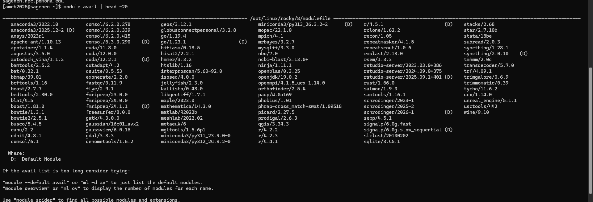
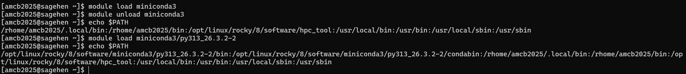
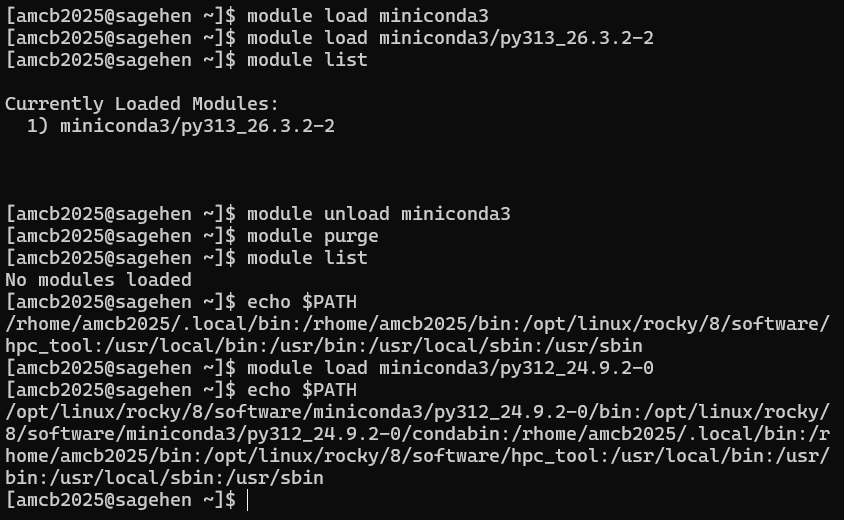

Software Modules Basics
Last updated on 2026-08-24 | Edit this page
Estimated time: 30 minutes
Overview
Questions
- Why can’t I just use any software on Sagehen?
- What is the module system?
- How do I find, load, and unload software modules?
- What if I need software that’s not installed?
Objectives
- Understand why HPC clusters use module systems
- Search for available software with
module avail - Load and unload modules for your work
- Manage module dependencies and version conflicts
- Know how to request new software installations
Why Modules? The Problem They Solve
On a personal computer, you install software globally. On a shared cluster with hundreds of researchers, this creates conflicts:
- Alice needs Python 3.8; Bob needs Python 3.11; Charlie needs Python 2.7
- Package A needs Library X version 2.0; Package B needs version 3.0
- Some code compiles best with GCC 9; other code needs GCC 11
A module system allows users to load and unload software dynamically, so multiple versions coexist without conflict.
Lmod: Sagehen’s Module Manager
Sagehen uses Lmod with 90+ pre-installed modules covering programming languages, compilers, scientific libraries, bioinformatics tools, and more.
Viewing Available Modules
BASH
# List all available modules
module avail
# Search for a specific module
module avail miniconda3
# Show module details without loading
module show miniconda3/py313_26.3.2-2
module avail listing on
Sagehen — miniconda3’s versions are in the middle column, with
(D) marking the default.Loading and Unloading Modules
BASH
# Load default Python
module load miniconda3
# Load a specific version
module load miniconda3/py313_26.3.2-2
# Load multiple modules at once (check `module avail` for the exact
# names and versions installed on Sagehen)
module load miniconda3/py313_26.3.2-2
# Check what's loaded
module list
# Unload a specific module
module unload miniconda3
# Unload all modules
module purgeWhat Happens When You Load a Module
Loading a module modifies environment variables (PATH,
LD_LIBRARY_PATH, etc.) so the system finds the right
software executables and libraries:
BASH
# Before loading python
echo $PATH
# /usr/local/bin:/usr/bin:/bin:...
module load miniconda3/py313_26.3.2-2
# After loading python
echo $PATH
# /opt/linux/rocky/8/software/miniconda3/py313_26.3.2-2/bin:...
{alt=‘A terminal transcript comparing echo PATH before and after module load. After loading miniconda3/py313_26.3.2-2, PATH begins with that module’s bin and condabin directories under /opt/linux/rocky/8/software.’}Module Families and Conflicts
Some modules belong to the same family. Loading one auto-unloads the other:
BASH
# Loading a second version of the same package auto-swaps it
module load cuda/11.8.0
module load cuda/12.2.1
# Lmod reports the swap: cuda/11.8.0 => cuda/12.2.1The same applies to Python versions – only one can be active at a time.
Requesting New Software
If you need software that’s not installed:
- Email its-hpc@pomona.edu with software name, version, use case, and documentation link
- Include your username and how many people would use it
- Expected response: within a few business days
Self-Install Alternative
You can install software in your home directory if needed:
BASH
mkdir -p ~/software
cd ~/software
# Download, configure, build with --prefix=~/software/
export PATH=~/software/bin:$PATHChallenge 1: Loading and Switching Modules
Practice loading, switching, and purging modules.
Steps:
Load default Python:
module load miniconda3Check the version:
python --version-
Switch to a different version:
List loaded modules:
module list-
Purge and reload:
Questions:
- Which version loaded by default?
- What happens after
module purge? - Can you have two Python versions loaded at once?
- The default
module load miniconda3loads the most recent stable version -
module purgeremoves all loaded modules;module listshows nothing - No, loading a second Python version auto-unloads the first (same module family)
This demonstrates Lmod’s ability to manage multiple versions cleanly.

{alt=‘Terminal transcript of an Lmod session. module list shows miniconda3/py313_26.3.2-2 as the only loaded module; after module purge, module list reports no modules loaded; the user then loads miniconda3/py312_24.9.2-0 and echo PATH shows that version’s bin directory first.’}- The module system solves software version conflicts on shared HPC clusters
- Sagehen uses Lmod with 90+ pre-installed packages
- Use
module availto search,module loadto activate,module purgeto reset - Only one version of each module family can be loaded at a time
- Always use
module purgeat the start of job scripts for reproducibility - Request new software at its-hpc@pomona.edu